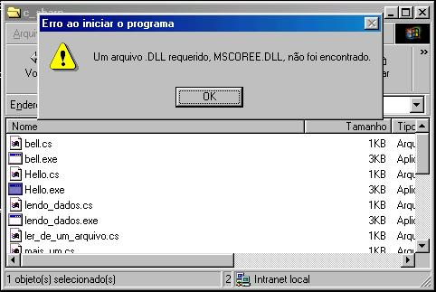
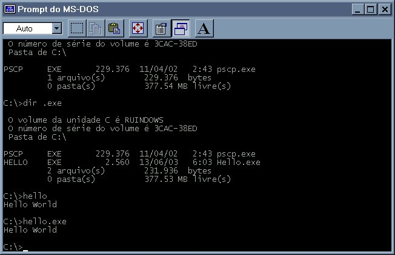

{kind=link}
{kind=link}

Universidade Federal do Rio Grande do Norte – UFRN
Departamento de Informática e Matemática Aplicada – DIMAp
C#
Relatório
de DIM052
2a semana (26 - 30 / 05 / 2003)
Componentes:
Humberto Diógenes.
Iúri Diniz
Ramon Enoc
Etapa do projeto:
Instalação dos programas (Compiladores, IDEs).
Nesta semana, nosso grupo se reuniu para acertarmos como iremos desenvolver nossas exemplos e documentação do projeto.
Nós utilizaremos como máquinas de trabalho, as máquinas do LCC do DIMAp, algumas rodando Linux e outras Windows 98.
Instalamos .NET Framework 1.1 nas máquinas Windows 98, este software dá o suporte para execução dos programas .NET no Windows98.
Infelizmente não conseguimos instalar o .NET Framework SDK 1.1, pois o mesmo só roda em máquinas Windows 2000 ou superiores. Em virtude disto não usaremos o Windows98 para programar e compilar nosso código.
Instalamos então o Mono nas máquinas do LCC, para instalá-lo foi preciso compilar seu fonte, escrito em C++, e suas bibliotecas, escritas em C#.
Para
executar qualquer programa .NET no
Windows só é preciso executá-lo como
qualquer outro programa, mas antes deve-se ter o .NET Framework
instalado. Se por acaso tentarmos executar um programa .NET sem o
Framework instalado vê-se uma mensagem de erro. Para
executar o mesmo programa no Linux é
preciso chamar o mono, de uma modo semelhante ao se executar um
programa escrito em
Java.
http://www.lcc.ufrn.br/~iuri/projeto/imagens/erro_windows.jpg

Para
se escrever o código nós adotamos o software Anjuta,
que torna muito mais rápido e a compilação e
execução de um programa em
C#. Há também o Visual Studio .NET, mas ele exige
máquinas Windows 2000 ou superiores e por não foi
instalado.
Fomos então testar os softwares, conseguimos compilar nosso primeiro Hello World e rodá-lo com sucesso no Windows 98 e no Linux, fotos das telas abaixo:
Linux:
http://www.lcc.ufrn.br/~iuri/projeto/imagens/hello_linux.jpg
Windows98:
http://www.lcc.ufrn.br/~iuri/projeto/imagens/hello_windows.jpg

Localização dos programas na internet:
Anjuta
DEV Studio:
http://anjuta.sf.net
.NET
Framework e .NET Framework
SDK:
http://msdn.microsoft.com/library
http://tux.lcc.ufrn.br/~iuri/RPMS/c_sharp_win
Código
fonte de Hello.cs:
http://www.lcc.ufrn.br/~iuri/projeto/exemplos/Hello.cs
Hello.exe:
http://www.lcc.ufrn.br/~iuri/projeto/programas/Hello.exe
{kind=link}